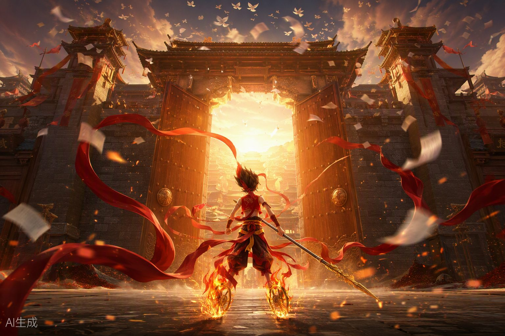
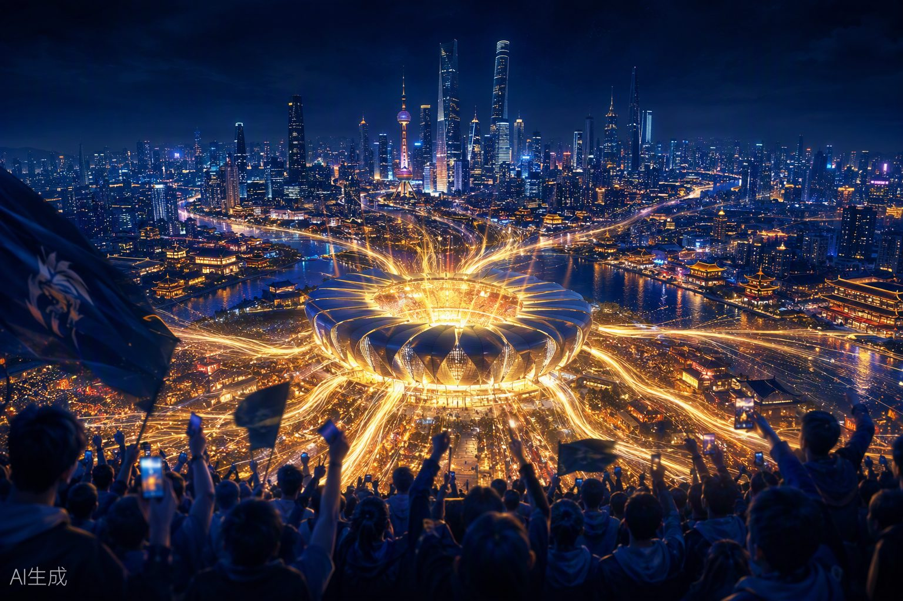

王者荣耀 · 国内服营销思路
真正被记住的，不只是胜负 · 从注意力、行为到扩散的策略判断与三套个人提案
真正被记住的，不只是胜负 · 从注意力、行为到扩散的策略判断与三套个人提案
长期体验《王者荣耀》，国服最高星耀段位，本命英雄区标，贵族 V9； 长期关注 KPL 赛事并参与玩家社群讨论，熟悉版本更新节奏、英雄平衡调整与皮肤商业化逻辑。 王者对我来说不只是一款游戏，更是观察国内游戏营销的最佳样本—— 它把皮肤营销、IP 联动、赛事运营和社交裂变做到了行业天花板，几乎每个动作都值得拆解。
王者卖的不是一局输赢，而是「我和谁一起玩过」。拆开它十年的营销动作，底层是三件事：
「开黑」原本只是玩家行为，五五朋友节却把它升级成每年都会发生的社交节日。
英雄、皮肤、战队和文化联动，不只是付费内容，也是玩家展示审美、地域、圈层与情感的工具。
KPL 把一局游戏延伸为赛季、战队、选手、主场和大众赛事，让不在线的用户也能持续消费王者内容。
| 阶段 | 核心打法 | 解决的问题 |
|---|---|---|
| 2015—2017 · 全民渗透 | 移动 MOBA、好友开黑、五五节点 | 降低理解与组队门槛 |
| 2018—2020 · IP 扩张 | KPL、敦煌合作、明星与跨界内容 | 从游戏升级为大众文化 |
| 2021—2023 · 生态深化 | 文化皮肤、玩家共创、全民赛事 | 扩大表达与参与空间 |
| 2024—2026 · 长青进化 | 全球上线、区域电竞、十周年与大 IP 联动 | 延长生命周期与边界 |
用「注意力 → 行为 → 扩散」三步拆开看，每个事件做对了什么一目了然。点击模块展开完整分析：
针对三个具体的增长缺口给出的可执行方案，每套都配了概念视觉。点击模块展开完整提案：


拉新、召回、社区，正好覆盖一款长青游戏最核心的三个增长杠杆——热度会过去，但关系链和城市身份会留下来。
我能带来的不是「找一个大 IP」，而是把用户情绪翻译成可执行的增长路径：让内容热度接到教学、组队、回流和赛事，再沉淀为节日、关系链或社区资产。